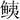

禽兽鱼虫禁忌并治第二十四
论辨二首 合九十法 方二十一首
凡饮食滋味，以养于生，食之有妨，反能为害。自非服药炼液，焉能不饮食乎。切见时人，不闲调摄，疾疢竞起；若不因食而生，苟全其生，须知切忌者矣。所食之味，有与病相宜，有与身为害，若得宜则益体，害则成疾，以此致危，例皆难疗。凡煮药饮汁以解毒者，虽云救急，不可热饮，诸毒病得热更甚，宜冷饮之。
肝病禁辛，心病禁咸，脾病禁酸，肺病禁苦，肾病禁甘。春不食肝，夏不食心，秋不食肺，冬不食肾，四季不食脾。辨曰：春不食肝者，为肝气王，脾气败，若食肝，则又补肝，脾气败尤甚，不可救。又肝王之时，不可以死气入肝，恐伤魂也。若非王时，即虚，以肝补之佳。余脏准此。
凡肝脏自不可轻啖，自死者弥甚。
凡心皆为神识所舍，勿食之，使人来生复其报对矣。
凡肉及肝，落地不着尘土者，不可食之。
猪肉落水浮者，不可食。
诸肉及鱼，若狗不食，鸟不啄者，不可食。
诸肉不干，火炙不动，见水自动者，不可食之。
肉中有如米点者，不可食之。
六畜肉，热血不断者，不可食之。
父母及身本命肉，食之令人神魂不安。
食肥肉及热羹，不得饮冷水。
诸五脏及鱼，投地尘土不污者，不可食之。
秽饭馁肉臭鱼，食之皆伤人。
自死肉，口闭者，不可食之。
六畜自死，皆疫死，则有毒，不可食之。
兽自死，北首及伏地者，食之杀人。
食生肉，饱饮乳，变成白虫。一作血蛊。
疫死牛肉，食之令病洞下，亦致坚积，宜利药下之。
脯藏米瓮中，有毒，及经夏食之，发肾病。
治自死六畜肉中毒方
黄柏屑，捣服方寸匕。
治食郁肉漏脯中毒方郁肉，密器盖之隔宿者是也。漏脯，茅屋漏下沾着者是也。
烧犬屎，酒服方寸匕，每服人乳汁亦良。
饮生韭汁三升，亦得。
治黍米中藏干脯食之中毒方
大豆浓煮汁，饮数升即解。亦治诸肉漏脯等毒。
治食生肉中毒方
掘地深三尺，取其下土三升，以水五升，煮数沸，澄清汁，饮一升，即愈。
治六畜鸟兽肝中毒方
水浸豆豉，绞取汁，服数升愈。
马脚无夜眼者，不可食之。
食酸马肉，不饮酒，则杀人。
马肉不可热食，伤人心。
马鞍下肉，食之杀人。
白马黑头者，不可食之。
白马青蹄者，不可食之。
马肉

肉共食，饱醉卧，大忌。
驴马肉合猪肉食之，成霍乱。
马肝及毛，不可妄食，中毒害人。
治马肝毒中人未死方
雄鼠屎二七粒，末之，水和服，日再服。屎尖者是。
又方
人垢，取方寸匕，服之佳。
治食马肉中毒欲死方
香豉二两 杏仁三两
上二味，蒸一食顷，熟，杵之服，日再服。
又方
煮芦根汁，饮之良。
疫死牛，或目赤，或黄，食之大忌。
牛肉共猪肉食之，必作寸白虫。
青牛肠，不可合犬肉食之。
牛肺，从三月至五月，其中有虫如马尾，割去勿食，食则损人。
牛羊猪肉，皆不得以楮木桑木蒸炙。食之，令人腹内生虫。
啖蛇牛肉杀人。何以知之？啖蛇者，毛发向后顺者是也。
治啖蛇牛肉食之欲死方
饮人乳汁一升，立愈。
又方
以泔洗头，饮一升，愈。
牛肚细切，以水一斗，煮取一升，暖饮之，大汗出者愈
治食牛肉中毒方
甘草煮汁饮之，即解。
羊肉，其有宿热者，不可食之。
羊肉不可共生鱼、酪食之，害人。
羊蹄甲中有珠子白者，名羊悬筋，食之令人癫。
白羊黑头，食其脑，作肠痈。
羊肝共生椒食之，破人五脏。
猪肉共羊肝和食之，令人心闷。
猪肉以生胡荽同食，烂人脐。
猪脂不可合梅子食之。
猪肉和葵食之，少气。
鹿肉不可和蒲白作羹，食之发恶疮。
麋脂及梅李子，若妊娠食之，令子青盲，男子伤精。
獐肉不可合虾及生菜、梅李果食之，皆病人。
痼疾人，不可食熊肉，令终身不愈。
白犬自死，不出舌者，食之害人。
食狗鼠余，令人发瘘疮。
治食犬肉不消成病方 治食犬肉不消，心下坚或腹胀，口干大渴，心急发热，妄语如狂，或洞下方。
杏仁一升，合皮，熟，研用
以沸汤三升和，取汁分三服，利下肉片，大验。
妇人妊娠，不可食兔肉、山羊肉及鳖、鸡、鸭，令子无声音。
兔肉不可合白鸡肉食之，令人面发黄。
兔肉着干姜食之，成霍乱。
凡鸟自死，口不闭，翅不合者，不可食之。
诸禽肉，肝青者，食之杀人。
鸡有六翮四距者，不可食之。
乌鸡白首者，不可食之。
鸡不可共葫蒜食之，滞气。一云鸡子。
山鸡不可合鸟兽肉食之。
雉肉久食之，令人瘦。
鸭卵不可合鳖肉食之。
妇人妊娠食雀肉，令子淫乱无耻。
雀肉不可合李子食之。
燕肉勿食，入水为蛟龙所啖。
治食鸟兽中箭肉毒方 鸟兽有中毒箭死者，其肉有毒，解之方
大豆煮汁及蓝汁，服之，解。
鱼头正白如连珠，至脊上，食之杀人。
鱼头中无腮者，不可食之，杀人。
鱼无肠胆者，不可食之，三年阴不起，女子绝生。
鱼头似有角者，不可食之。
鱼目合者，不可食之。
六甲日，勿食鳞甲之物。
鱼不可合鸡肉食之。
鱼不得合鸬鹚肉食之。
鲤鱼 不可合小豆藿食之，其子不可合猪肝食之，害人。
鲤鱼不可合犬肉食之。
鲫鱼不可合猴雉肉食之。一云：不可合猪肝食。
鱼合鹿肉生食，令人筋甲缩。
青鱼 不可合生葫荽及生葵，并麦中食之。

、鳝不可合白犬血食之。龟肉不可合酒、果子食之。鳖目凹陷者及厌下有王字形者，不可食之。其肉不得合鸡鸭子食之。
龟鳖肉不可合苋菜食之。
虾无须及腹下通黑，煮之反白者，不可食之。食脍，饮乳酪，令人腹中生虫，为瘕。
治食 不化成癥病方 食之，在心胸间不化，吐复不出，速下除之，久成癥病，治之方。
橘皮一两 大黄二两 朴硝二两
上三味，以水一大升，煮至小升，顿服即消。
食 多不消结为癥病治之方
马鞭草
上一味，捣汁饮之。或以姜叶汁，饮之一升，亦消。又可服吐药吐之。
食鱼后中毒面肿烦乱治之方橘皮
浓煎汁，服之即解。
食


鱼中毒方
芦根
煮汁，服之即解。
蟹目相向，足斑赤者，不可食之。
食蟹中毒治之方
紫苏
煮汁，饮之三升。紫苏子捣汁饮之，亦良。
又方
冬瓜汁，饮二升。食冬瓜亦可。
凡蟹未遇霜，多毒。其熟者，乃可食之。
蜘蛛落食中，有毒，勿食之。
凡蜂蝇虫蚁等，多集食上，食之致瘘。